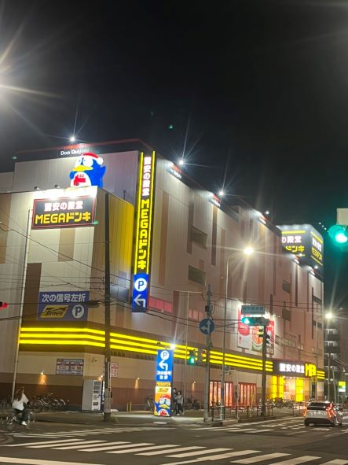

ENEOS
-撮影日2022年10月9日 土曜日19:20 撮影場所：神奈川県横浜市鶴見区 撮影者：大谷陸人

→ENEOSという文字の下に対応しているポイントカードとガソリン各種の値段が表示されており、
ガソリンスタンドと分かるような看板で遠くからでも値段などの必要な情報が分かるようになっている。
2.
ドン・キホーテ
-撮影日2022年10月9日 土曜日19:32 撮影場所：神奈川県横浜市鶴見区 撮影者：大谷陸人

→マスコットキャラクターの隣に看板を設置しており、文字や電光もドン・キホーテと分かるように
他店舗と同じように色を合わせていたり、駐車場の入り口案内の役割も担っていた。
3.
吉兆
-撮影日2022年10月9日 土曜日19:35 撮影場所：神奈川県横浜市鶴見区 撮影者：大谷陸人

→看板を目立つように派手に電光を使ってパチンコ店であることを表していると感じた。
電光を上手く看板もだが、全体的に上手く活用していた。
まとめ
→今回は、高い位置にある看板をピックアップして集めた。
それぞれのブランドが分かるように電光の使い方を工夫していたり、看板だけでなく他の情報を付加をされていたりなど
撮影をして様々な発見があった。
建物に比べて注目されない看板だが、担っている役割はとても大きいと感じ、
内装や店のイメージとはかけ離れた看板などもあるように緻密に工夫されていることが分かったので
注目していきたいと思いました。